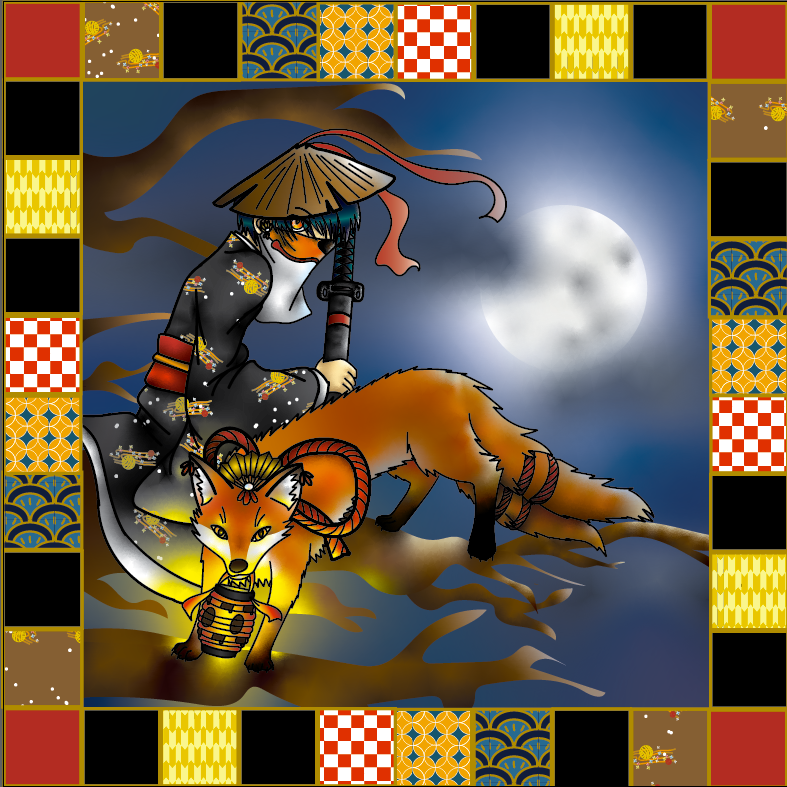

|  |
Date: May 2021
Program: Adobe Illustrator
A drawing of a fantastical Japanese swordsman and his fox familiar. The character design of the swordsman is inspired by the music video of Yume no Mata Yume by Mafaumafu, and the face on the lantern is a direct reference to his mascot. Some of the border patterns are a reproduction of common Japanese cloth patterns.
|